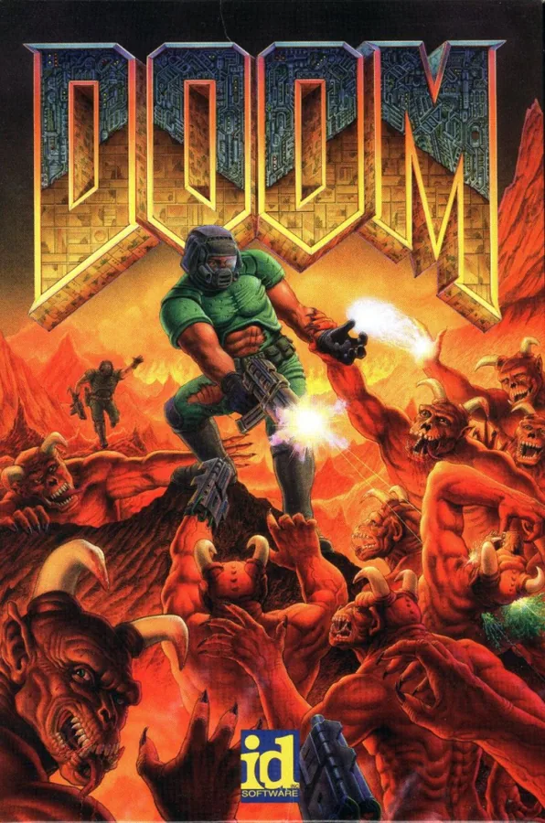

← 返回全部路线上游来源页为“Batocera.linux”发布的图片；图片授权未单独声明。 查看图片来源 ↗
Batocera.linux
- 将旧电脑或支持的设备转成专用复古游戏平台。
- 3/5 个维度有可核验来源
- 使用已读来源支持的难度、文档/社区与实用价值维度；未核价的成本及未完整评估的刷坏/安全风险保留为 null。

它能变成什么
- 复古游戏
- 设备范围 官方提供映像的 PC / 单板机 / 掌机
- 设备类别 游戏设备
- AI 关系 传统复活基础设施
- 路线类型 平台 / 多机型工程
- 资料最近核对 2026-10-20
动手前
- 改造方法 外置启动或替换系统
- 上手难度 进阶
- 拆机 不需要
- 焊接 不需要
- 云 API / 服务 可选
- 停止条件 性能受硬件限制；系统不授予游戏 ROM 的版权。
- 固件 待核实
- 地区版本 待核实
- 二手价范围 缺少可靠来源
- 改造成本 缺少可靠来源
- 可能成本 USB/SD 介质
- 可能成本 兼容手柄
开始前的三点
风险与恢复
- 数据丢失风险 可能发生
- 刷坏 / 无法启动风险 依操作路径
- 恢复路线 外置启动可移除介质回到原系统；若安装到内部磁盘需先备份。
- 恢复资料 ↗（无已核验链接）
证据、维护与来源
- E1 · 源码与部署文档 README 明确 USB/SD 启动与将已有计算机转为游戏机的用途，并链接设备兼容与下载。
- 实机状态 KitAgain 未对此设备进行实机测试。
- 维护状态 仓库未归档
- GitHub 最后 push 2026-10-20T07:12:11Z
- 仓库许可证 UNKNOWN
- 近期 push 不证明型号可用；根许可证也不自动覆盖固件、模型、品牌或第三方组件。
- 上游项目文档 ↗2026-10-20先用它了解项目能做什么、怎样开始，以及作者写明的限制。https://github.com/batocera-linux/batocera.linux/blob/master/README.md
项目账号与已核实作者主页
- batocera-linux · GitHub ↗ — 源码仓库所有者账号；不据此推断其为唯一作者